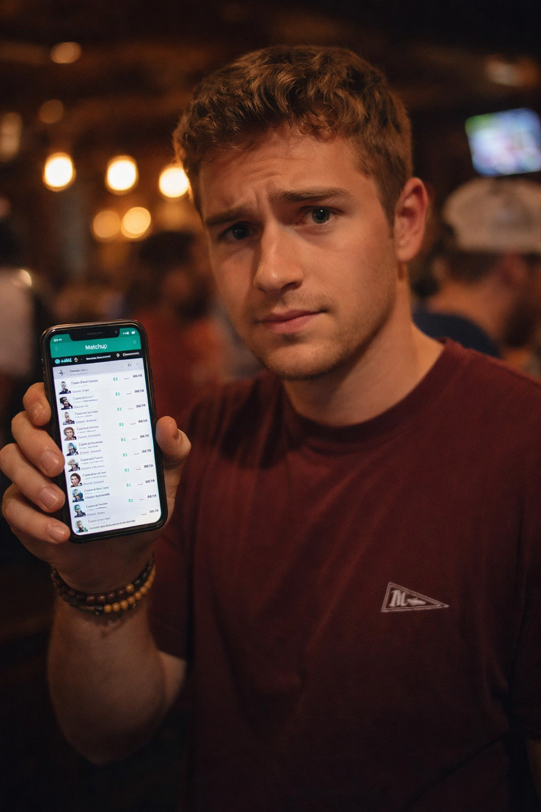
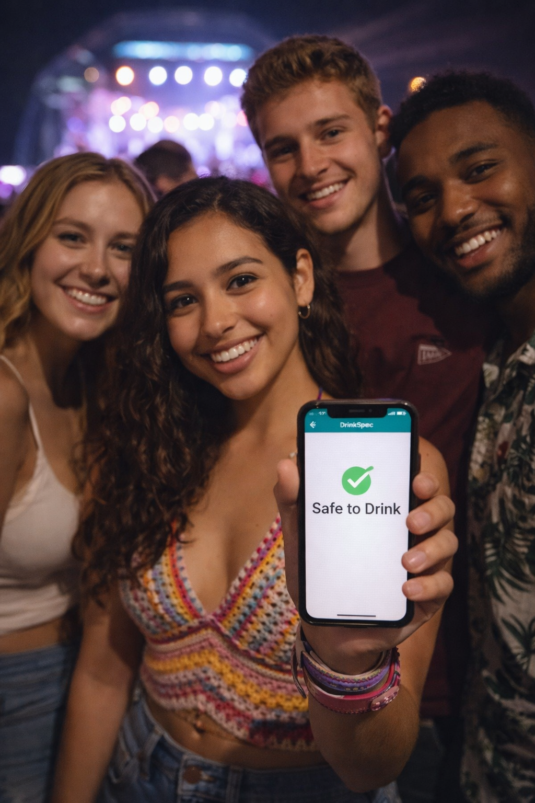

Testimonials
Nightlifers are loving the DrinkSpec "Sentinel". Hear some of their stories below!

"DrinkSpec gives me more confidence than my fantasy football lineup…"

"It takes next to no time to test my drink. It’s much faster than my friends deciding what we’re going to eat after the bar!"
"DrinkSpec told me my drink was safe. Unfortunately, it couldn't stop me from texting my ex..."